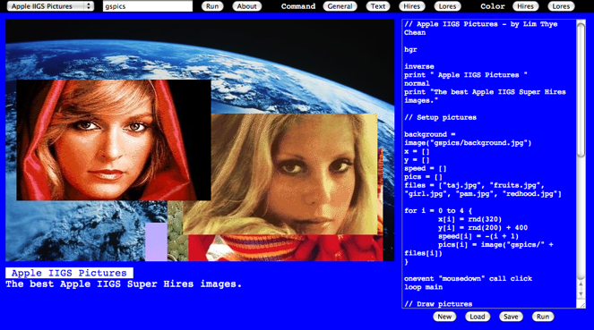

GScript BASIC

Applesoft BASIC
10 HGR
20 HCOLOR = 3
30 FOR I = 0 TO 279 STEP 5
40 HPLOT I, 0 TO 279 - I, 191
50 NEXT
GScript BASIC
hgr
hcolor = “white”
for i = 0 to 639 step 5 {
hplot i, 0 to 639 - i, 399
}
GScript BASIC adds new commands not avaible in Applesoft BASIC for drawing shapes, play sound and perform animation.
Compare Applesoft BASIC code (with Apple II Hires) with GScript BASIC (with 640x400 Super Hires) to see the similarities.
